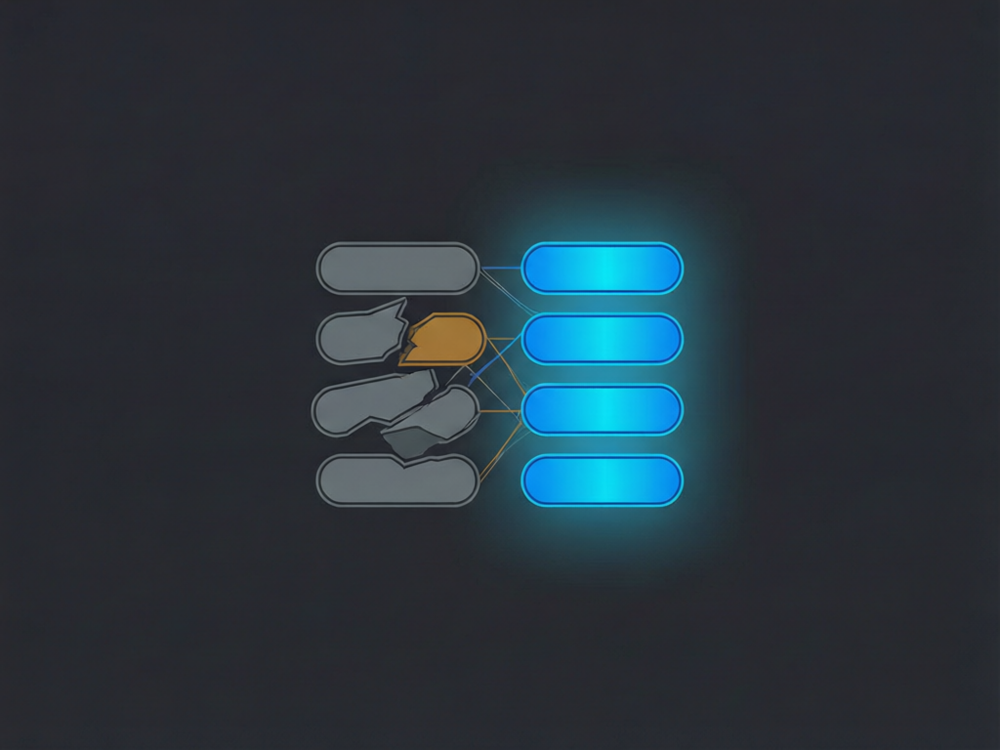

你们用的是同一个模型，同一个客户端，甚至同一份需求文档。
同事的 Agent 一次跑完，测试通过，提交干净。你的 Agent 改了六轮，最后你接手重写。
你会怀疑是不是人家用了更贵的模型。多数情况下不是。差距在模型外面那一圈。
⚠️ 一个简单的事实：模型是你们共用的，运行时是各自搭的。共用部分拉不开差距，拉开差距的一定是各自搭的那部分。
一句话：除了模型权重之外，让 Agent 跑起来的所有东西。
具体是五层：上下文怎么给、工具怎么接、权限怎么限、结果怎么验证、环境跑在哪。
模型只负责"给定这些输入，下一步最可能是什么"。至于输入给得对不对、工具能不能用、结果有没有人检查，模型一概不管——那是运行时的事。
所以"Agent 不好用"这句话，大多数时候应该翻译成"我的运行时没搭好"。
新手最常见的做法：把整个仓库、整个文档库塞进上下文，以为给得越多它越懂。
结果是关键信息被稀释。真正约束这次修改的那三条规则，混在几千行无关代码里，权重被摊薄，模型自然会漏。
高手的上下文是可检索、可裁剪的：需要哪份规范就取哪份，改哪个模块就加载哪个模块的约束，历史结论能复用，过期内容能剔除。
判断标准很简单：你能不能说出这次任务的关键约束在哪一段。说不出来，说明你自己都没管住上下文。
没有工具时，模型只能靠记忆编命令：参数对不对、版本支不支持、执行完怎么判断成败，全靠猜。
GitHub 上的趋势是把已有能力包成标准工具接口。比如 ansible-mcp-server 把 Ansible 的自动化能力接到 MCP 上，让 Agent 调用现成的 playbook，而不是每次现写一段 Shell。
这个方向的真正价值不是"多了个工具"，是把不确定的自由发挥换成了确定的已验证能力。
你自己落地时也一样：凡是团队里已经被反复验证的操作——构建、部署、查日志、查配置——优先做成工具，别让模型每次重新发明。
很多人不是不想放权，是不敢：怕数据出去、怕误操作、怕出了事没法复现。
所以本地优先的运行时被关注不是偶然。alter ego、ego-browser 这类项目的思路是把 Agent 跑在本机、权限边界画在本机、状态留在本机；DroidMind 在 2026 年 10 月 26 日周榜快照里一周新增约 6,975 star，也是同一个方向的信号。
注意这里的关键不是"本地"两个字，是你敢授权的范围。环境可控，你才敢让它自动跑完整流程；环境不可控，你只能让它写两行就停下来问你一次。
效率差距很多时候就是这么来的：不是对方模型快，是对方不用每一步都等你确认。

这是最容易被跳过、又最值钱的一层。
没有验证回路的 Agent，交付标准是"我说我改完了"。有验证回路的 Agent，交付标准是"构建过了、测试过了、截图对上了"。
前者你每次都要人工复核，后者你只需要抽查。长期看，复核成本才是 Agent 使用成本的大头。
验证不必一开始就很大：能编译就先编译，有 lint 就先 lint，有最小用例就先跑最小用例。关键是让"完成"这个词有客观含义。
| 层 | 踩坑配置 | 顺手配置 |
|---|---|---|
| 上下文 | 整仓塞入，靠模型自己找 | 按需检索，关键约束置顶 |
| 工具 | 现写命令，参数靠猜 | 复用已验证的工具接口 |
| 权限 | 要么全开，要么每步确认 | 按操作风险分级授权 |
| 验证 | 以"改完了"为终点 | 以可复现的检查为终点 |
| 环境 | 状态散落，无法复现 | 状态可留、过程可回放 |
✅ 先补验证。投入最小，立刻减少你的复核时间，而且后面每一步改造都靠它兜底。
✅ 再收工具。把团队里反复执行、已经验证过的操作包成工具，优先做最高频的三五个。
✅ 然后治理上下文。删掉长期没人维护的说明文档，给关键约束一个固定位置，让历史结论可检索。
✅ 最后才谈并行和多 Agent。前三层没搭好就上并行，只是把混乱复制几份。
🌱 不建议的动作：一觉得不好用就换模型。模型换掉，运行时原样，结果通常也原样。
你用的从来不只是模型，
是模型外面那一圈。
📚 仓库（Ansible 能力接入 MCP）：github.com/ansible/ansible-mcp-server
📚 仓库（本地优先 Agent 运行时）：github.com/alterego-ai/alter-ego、github.com/ego-browser/ego-browser
📚 仓库（本地优先方向的受关注样本）：github.com/DroidMind/DroidMind
📊 榜单：GitHub Trending 周榜（github.com/trending?since=weekly），快照时间 2026-10-08 与 2026-10-26
说明：star 数为快照值，会随时间变化；仓库定位以各自 README 自述为准。文中"五层"是本文的归纳框架，并非某仓库的官方定义。
如果这篇对你有用：
👍 点个赞，给正在搭运行时的你
💬 留言说说：这五层里，你目前最缺哪一层？
🔄 转发给那个准备"换个贵模型试试"的同事